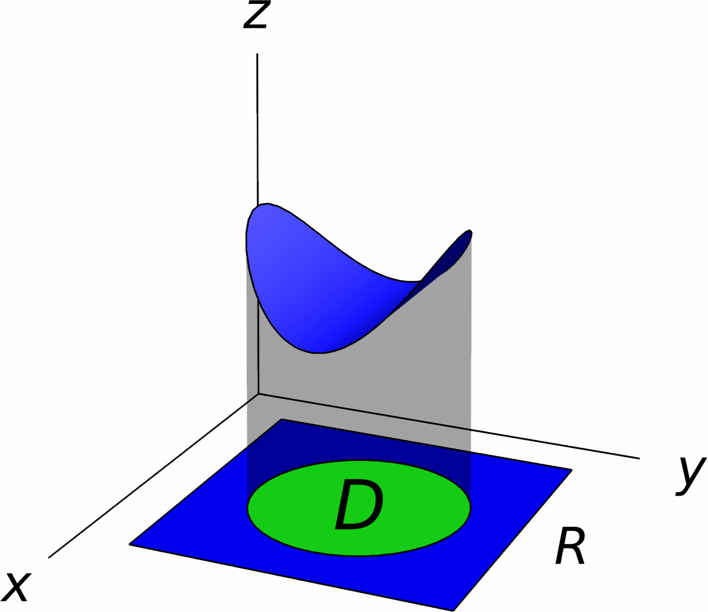
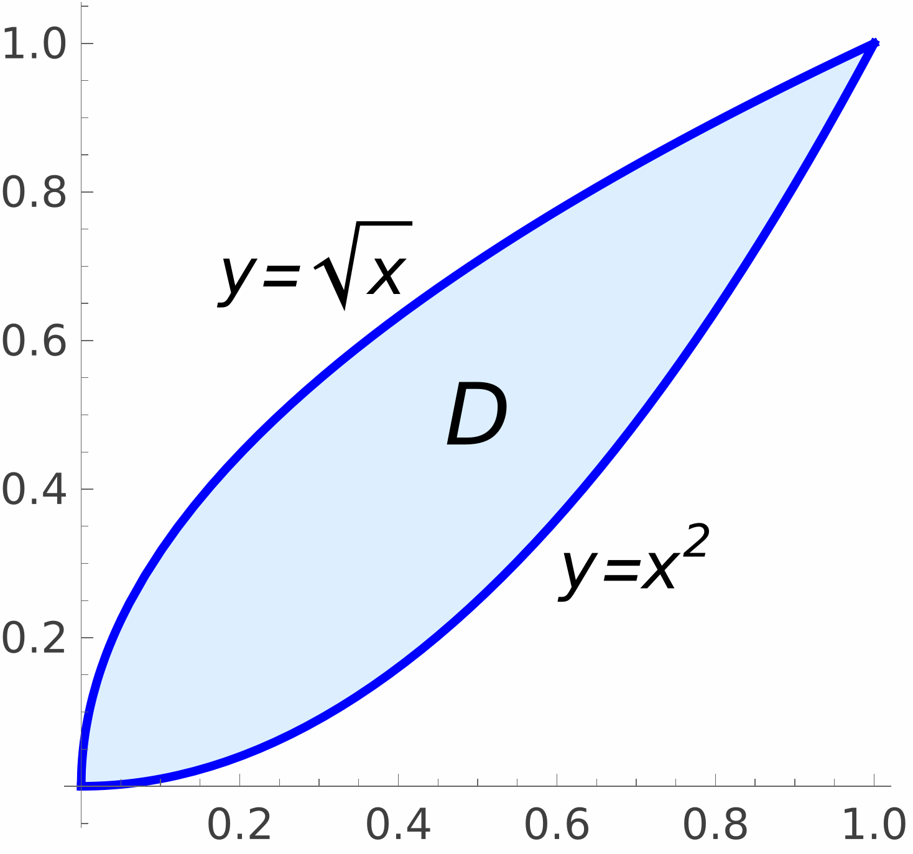
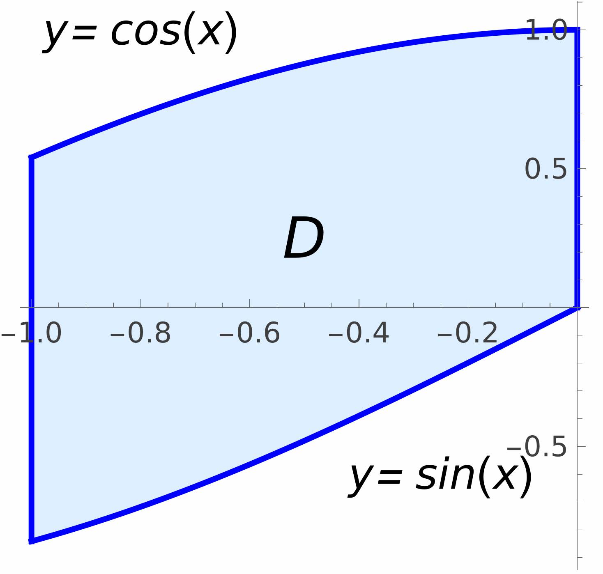
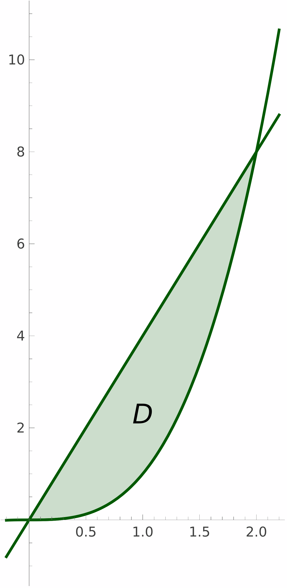
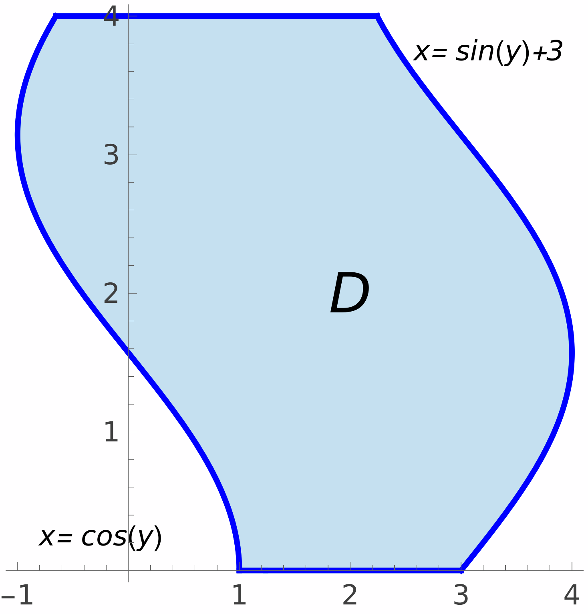
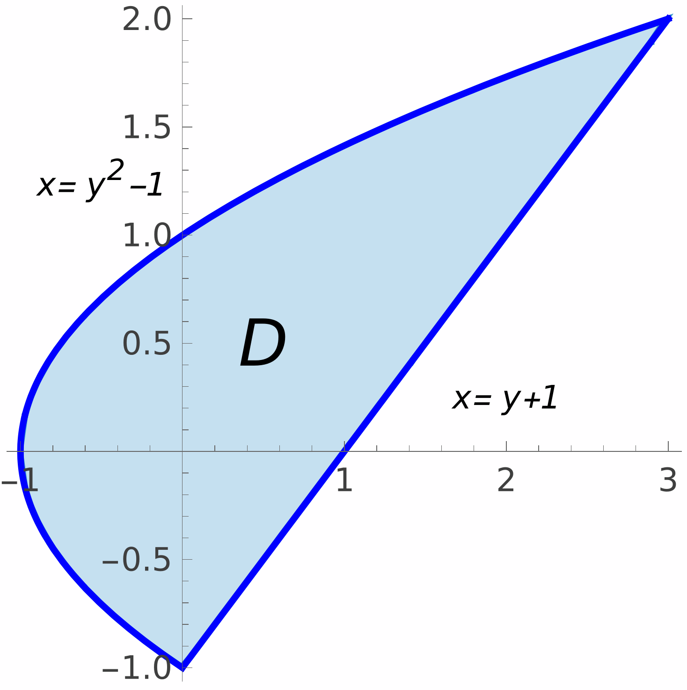
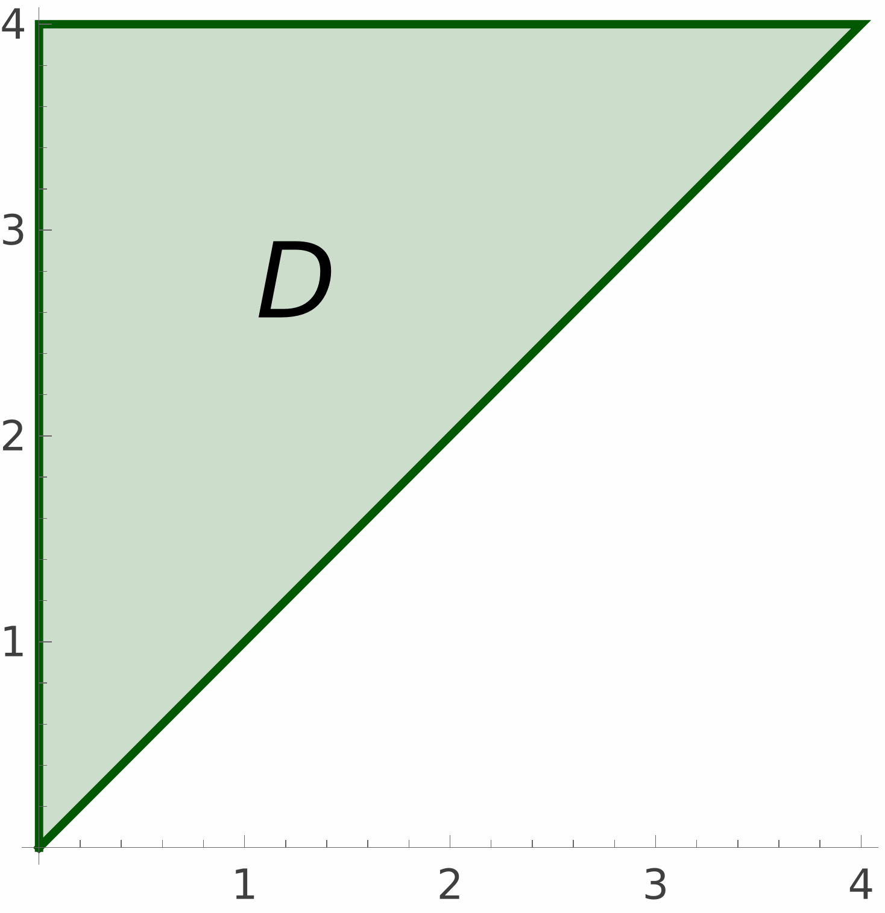
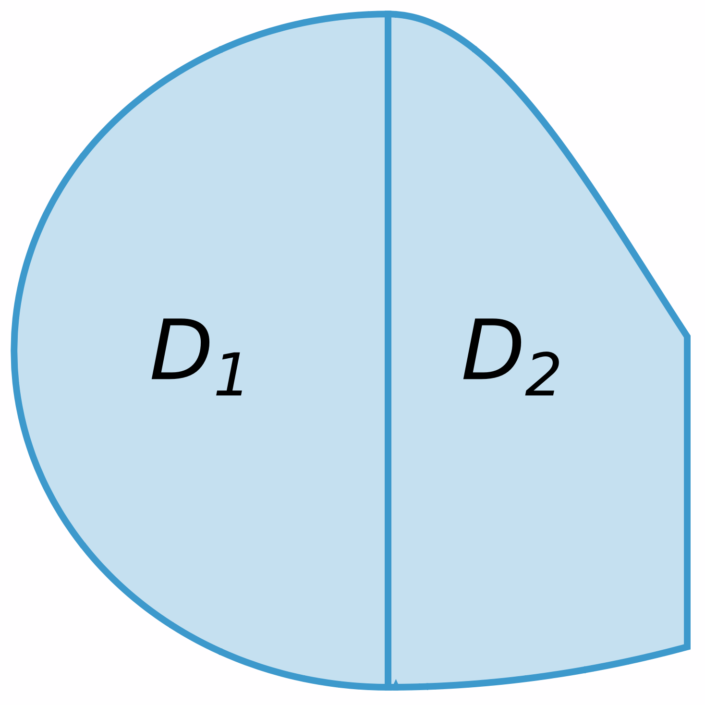

Double Integrals over General Regions
When we integrate functions of one variable, we are only interested in integrating over intervals of the form $[a,b]$. However, when taking double integrals, it may be the case that the region where we integrate is not necessarily a rectangle. Therefore, we need to develop an approach to compute double integrals over any region on the plane.
Integrating over General Regions
Suppose $f(x,y)$ is a function that is defined over some region $D$ (by a region we simply mean a subset of $\RR^2$). We want to define the notion of the integral of $f$ over $D$, even if $D$ is not a rectangle.
A way to do this is to consider any rectangle $R$ that contains $D$. Then, we can extend the function $f$ to a new function $F\colon R\to \RR$ by declaring \[ F(x,y) = \begin{cases} f(x,y), & (x,y)\textsf{ is in } D,\\ 0, & (x,y)\textsf{ is not in } D. \end{cases} \] In the picture on the right, the graph of $F$ is precisely the region painted in blue. Since we are extending $f$ by zero, it is clear that the volume enclosed between the graph of $f$ and $D$ is the same as the volume enclosed between the graph of $F$ and $R$. This motivates the following definition.

While this definition makes sense for any region a priori, we will mainly discuss how to effectively compute double integrals in two particular families of regions.
Regions of Type I
For example, the two regions below are examples of regions of Type I.


To integrate a continuous function over a region of Type I, the following formula will be useful. The formula is actually a direct consequence of Fubini's theorem.
Solution.
The curves $y=4x$ and $y=x^3$ intersect at the points $(0,0)$ and $(2,8)$, so the region $D$ is \[ D=\big\{ (x,y)\mid 0\leq x\leq 2,\,x^3 \leq y\leq 4x \big\}. \]
Consequently, the desired integral is \[ \begin{aligned} \iint_D f(x,y)\,dA =& \int_0^2\int_{x^3}^{4x}x\,dy\,dx = \int_{0}^{2}[ xy]_{y=x^3}^{y=4x}\,dx = \int_0^2 (4x^2-x^4)\,dx \\=& \bigg[\frac{4}{3}x^3-\frac{x^5}{5}\bigg]_{x=0}^{x=2} =\frac{74}{15}. \end{aligned} \]

Regions of Type II
For example, the two regions below are examples of regions of Type II.


Similarly to the case of Type I regions, there is a formula to integrate any continuous function on a Type II region:
Solution.
The region $D$ is a type II region. In fact, it is merely the triangle with vertices $(0,0)$, $(0,4)$ and $(4,4)$.
Thus, the desired integral is \[ \begin{aligned} \iint_D e^{-y^2}\,dA =& \int_0^4\int_0^ye^{-y^2}\,dx\,dy = \int_0^4\big[xe^{-y^2}\big]_{x=0}^{x=y}\,dy \\&= \int_0^4ye^{-y^2}\,dy = \bigg[-\frac12e^{-y^2}\bigg]_{y=0}^{y=4} = \frac{1-e^{-16}}{2}. \end{aligned} \]

Changing the Order of Integration
Let us come back to the integral \[ \iint_D e^{-y^2}\,dy \] over the region \[ D=\big\{(x,y)\mid 0\leq y\leq 4,\,0\leq x\leq y\big\}. \]
We can view the region $D$ as a Type I region. Indeed, \[ D = \big\{(x,y)\mid 0\leq x\leq 4, x\leq y\leq 4\big\}. \] However, if we try to compute $\iint_D e^{-y^2}\,dy$ as the iterated integral \[ \int_0^4\int_x^4e^{-y^2}\,dy\,dx, \] we are not able to do it, since the first step in said integral would be to find \[ \int e^{-y^2}\,dy. \] This integral does not have a closed expression, so we essentially cannot compute it. Nevertheless, Fubini's theorem states that \[ \int_0^4\int_x^4e^{-y^2}\,dy\,dx, = \int_0^4\int_0^ye^{-y^2}\,dx\,dy = \frac{1}{2}(1-e^{-16}). \]
This example teaches us two lessons:
- When computing a double integral over a general region over a region that is of Type I and of Type II at the same time, it may be the case that finding said integral with a specific order of integration is feasible, whereas the other order of integration may be a difficult or impossible integral.
- When finding an iterated integral, sometimes changing the order of integration can result in a simpler iterated integral.
- Express the above integral as an integral over a region $D$ in the plane.
- Find the integral by changing the order of integration.
Solution.
In the above integral, we see that $y$ ranges between $0$ and $\pi$, whereas, for each value of $y$, $x$ ranges between $y$ and $\pi$. Therefore, we can view \[ \int_0^{\pi}\int_y^{\pi}\cos(x^2)\,dx\,dy = \iint_D \cos(x^2)\,dA, \] where \[ D=\big\{(x,y)\mid 0\leq y\leq \pi,\,y\leq x\leq \pi\big\}. \] Note that $D$ is a region of Type I, but it is also a region of Type II: \[ D=\big\{(x,y)\mid 0\leq x\leq \pi,\,0\leq y\leq x\big\}. \] Therefore, changing the order of integration we obtain \[ \begin{aligned} \int_0^{\pi}\int_y^{\pi}\cos(x^2)\,dx\,dy =& \iint_D\cos(x^2)\,dA = \int_0^{\pi}\int_0^x\cos(x^2)\,dy\,dx = \int_0^{\pi}\big[y\cos(x^2)\big]_{y=0}^{y=x}\,dx \\=& \int_0^{\pi}x\cos(x^2)\,dx = \bigg[\frac12\sin(x^2)\bigg]_{x=0}^{x=\pi} = \frac12\sin(\pi^2). \end{aligned} \]
Properties of Double Integrals
We will finish this section with some general properties of double integrals which will be useful for computations. These properties will be two-dimensional analogues of the basic properties of (simple) integrals.
The first property of the integral is that it is linear and monotone:
- Additivity of the integral: \[ \iint_D (f(x,y)+g(x,y))\,dA = \iint_D f(x,y)\,dA + \iint_D g(x,y)\,dA. \]
- Homogeneity of the integral: \[ \iint_D af(x,y)\,dA = a\iint_D f(x,y)\,dA. \]
- Monotonicity of the integral: if $f(x,y)\geq g(x,y)$ for all $(x,y)$ in $D$, then \[ \iint_D f(x,y)\,dA \geq \iint_D g(x,y)\,dA. \]
Secondly, we have that the double integral is additive with respect to the domain. To motivate what this means, remember that if we have a function $f\colon [a,b]\to\RR$ and $c$ is any number in $[a,b]$, then \[ \int_a^bf(x)\,dx = \int_a^cf(x)\,dx+ \int_c^bf(x)\,dx. \] In other words, if we split the domain of integration $[a,b]$ into the union $[a,c]\cup[c,b]$, where only the boundaries of $[a,c]$ and $[c,b]$ intersect, then the integral of $f$ on $[a,b]$ is the sum of the integrals of $f$ on $[a,c]$ and $[c,d]$.
This propertie is also true for double integrals:
If $D=D_1\cup D_2$ is the union of two regions that do not intersect (except possibly at their boundaries), then \[ \iint_D f(x,y)\,dA = \iint_{D_1} f(x,y)\,dA+ \iint_{D_2} f(x,y)\,dA \]

Interestingly, we can also use double integrals in order to compute the area of any region in the plane:
Solution.
Let $D$ be the disk centered at the origin with radius $R$. Then we can write $D$ as a region of Type I: \[ D=\bigg\{(x,y) \mid -R\leq x\leq R,\,-\sqrt{R^2-x^2}\leq y\leq \sqrt{R^2-x^2}\bigg\}. \] Consequently, the area of the disk $D$ is \[ \begin{aligned} A(D) =& \iint_D 1\,dA = \int_{-R}^{R}\int_{-\sqrt{R^2-x^2}}^{\sqrt{R^2-x^2}}1\,dy\,dx = \int_{-R}^{R}2\sqrt{R^2-x^2}\,dx. \end{aligned} \] Setting $x=R\sin\theta$, we obtain \[ \begin{aligned} A(D) =& \int_{-\frac{\pi}{2}}^{\frac{\pi}{2}}\sqrt{R^2-R^2\sin^2\theta}R\cos\theta\,d\theta = R^2\int_{-\frac{\pi}{2}}^{\frac{\pi}{2}}\cos^2\theta\,d\theta = \frac{R^2}{2}\int_{-\frac{\pi}{2}}^{\frac{\pi}{2}}(1+\cos(2\theta))\,d\theta \\=& \frac{R^2}{2}\bigg[\theta+\frac{\sin(2\theta)}{2}\bigg]_{x=-\frac{\pi}{2}}^{x=\frac{\pi}{2}} = \pi R^2. \end{aligned} \]
Finally, combining the monotonicity of the integral and the formula for the area of a region, we can get upper and lower bounds on the value of an integral:
$m\leq f(x,y)\leq M$ for all $(x,y)$ in $D$, then \[ m\cdot A(D)\leq \iint_D f(x,y)\,dA\leq M\cdot A(D). \]